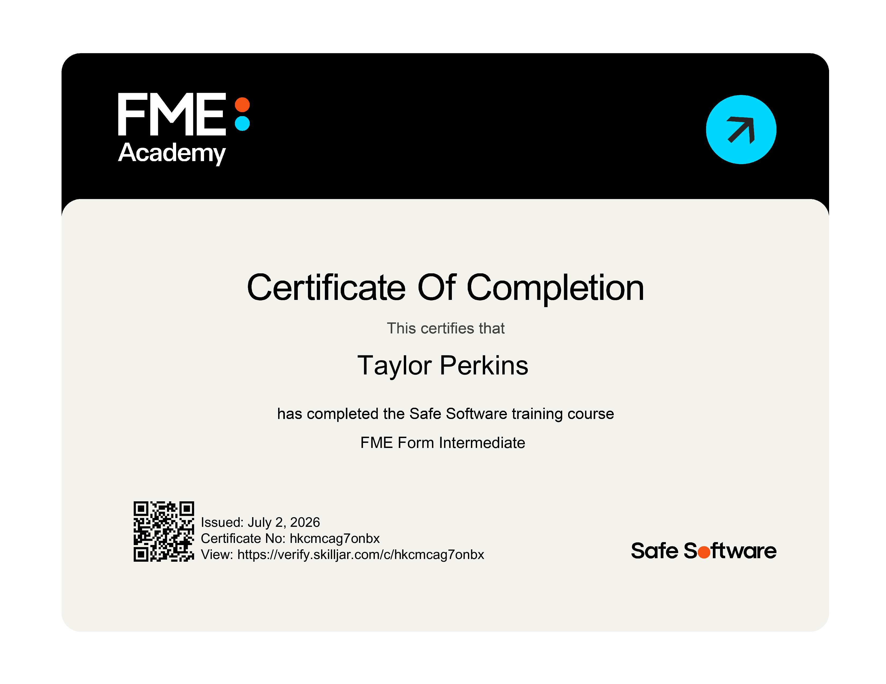
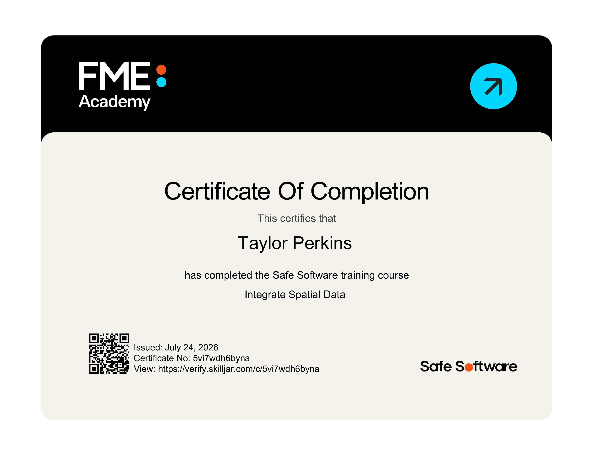
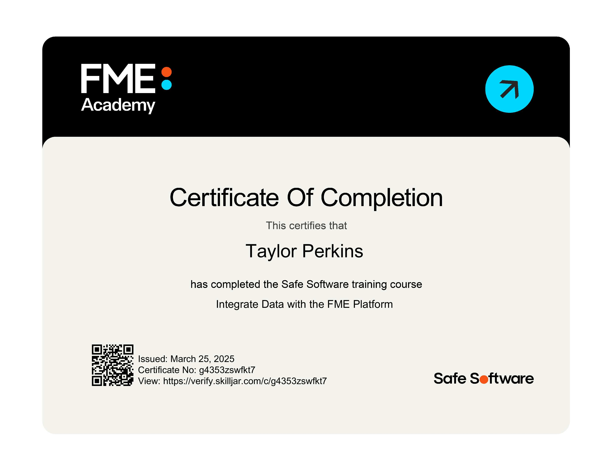
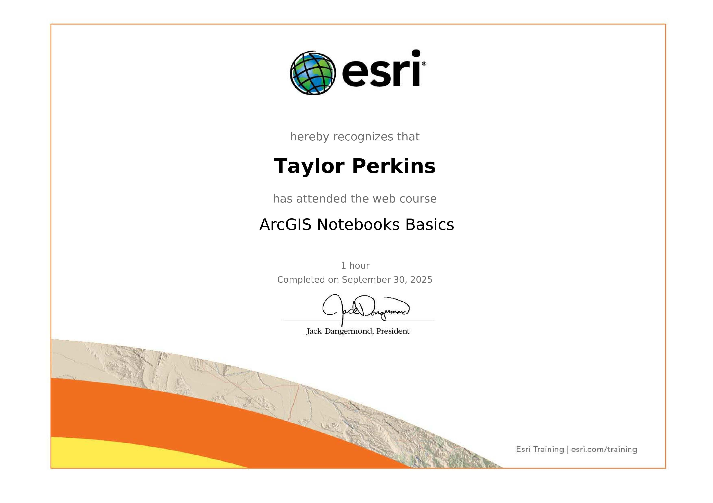
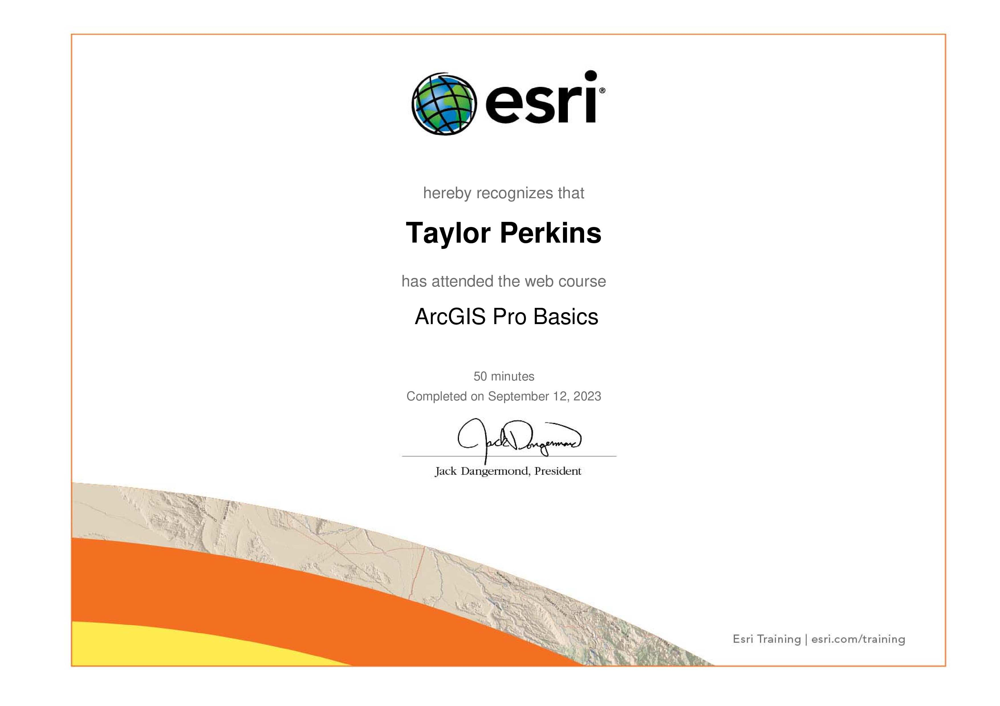
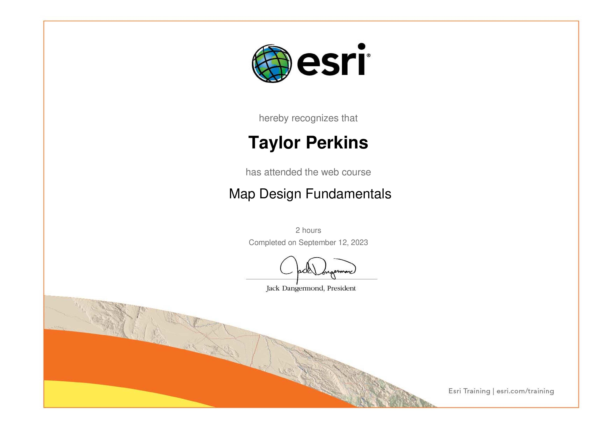
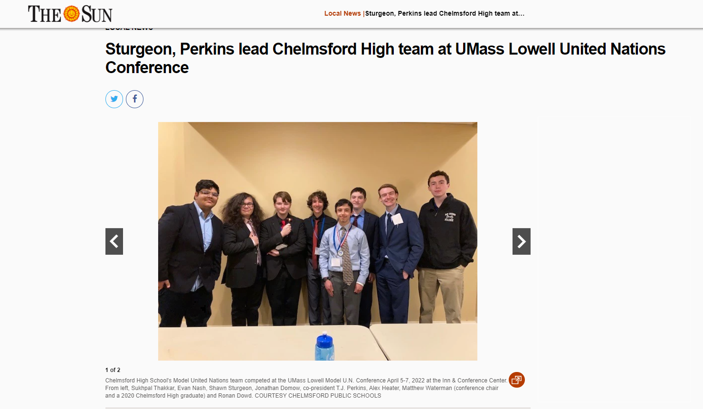

Achievements
Click any award or certification image to view it in full size.

FME Form Intermediate Certificate
Safe Software • 2026
Certificate offered by FME Academy which covers how to author and manage FME data integration workflows through readers and writers, transformers, parameters, and more.

Integrate Spatial Data Certificate
Safe Software • 2026
Certificate offered by FME Academy which covers how to manage, manipulate, and automate spatial data in an FME workspace environment.

Integrate Data With The FME Platform Certificate
Safe Software • 2025
Certificate offered by FME Academy which covers the main concepts and functionality of FME, including in integrating spatial and non-spatial data and automating data workflows.
Phi Beta Kappa Honor Society Certificate
Phi Beta Kappa • 2026
Certificate of membership in the Phi Beta Kappa Honor Society, which recognizes exceptional academic achievement.
GIS Basics Certificate
Esri • 2025
Certificate offered by Esri which covers fundamental GIS concepts and ArcGIS capabilities.
Intro To Distance Analysis Certificate
Esri • 2025
Certificate offered by Esri which covers the different concepts, tools, methods, and uses of measuring and modeling distance in GIS.

ArcGIS Notebooks Basics Certificate
Esri • 2025
Certificate offered by Esri which covers how to create Python notebooks in ArcGIS for writing code that can do spatial data extraction, analysis, automation, management, visualization, and more.
Basics Of Javascript Web Apps Certificate
Esri • 2025
Certificate offered by Esri which covers how to create web map applications through HTML, CSS, and JavaScript.

ArcGIS Pro Basics Certificate
Esri • 2023
Certificate offered by Esri which covers the main features and capabilities of ArcGIS Pro.
Creating A Map Layout Certificate
Esri • 2023
Certificate offered by Esri which covers best practices, organization, and audience expectations for a map layout.
Editing Basics In ArcGIS Pro Certificate
Esri • 2023
Certificate offered by Esri which covers how to configure, update, and manage geospatial data through tools and functions in ArcGIS.

Map Design Fundamentals Certificate
Esri • 2023
Certificate offered by Esri which covers how to create maps that are straightforward and effective for different audiences via structural and visual design.

Microsoft Office Certificate
Chelmsford High School • 2022
Certificate for a high school course in Microsoft Office applications, including Word, Excel, PowerPoint, and Outlook, and their unique functionalities.
Geographic Information Science & Technology Certificate
University of Massachusetts Amherst • In Progress (Expected September 2026)
Certification from the University of Massachusetts Amherst for completion of various GIS-based courses that provide a foundation in different geospatial methods and technologies.
FEATURED ARTICLE
Featured in The Lowell Sun
Coverage of my leadership, participation, and success at the UMass Lowell Model United Nations Conference.

Read Full Article →